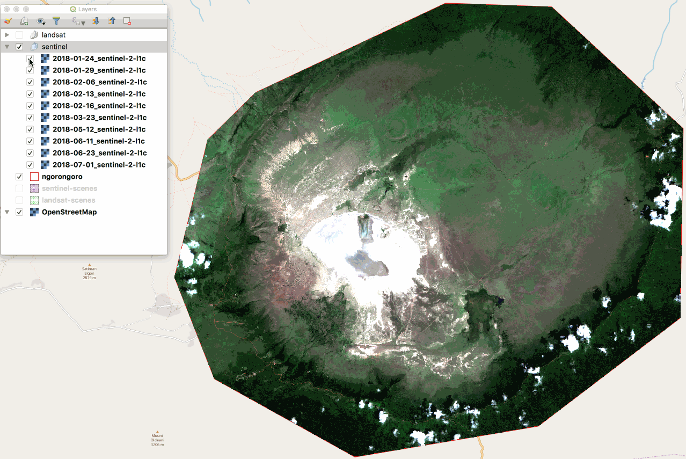

<!DOCTYPE html>
<html lang="en">
  <head>
    <meta charset="utf-8" />
    <meta name="viewport" content="width=device-width, initial-scale=1.0, maximum-scale=1.0, user-scalable=no" />

    <title>reveal-md</title>
    <link rel="stylesheet" href="./css/reveal.css" />
    <link rel="stylesheet" href="./css/theme/black.css" id="theme" />
    <link rel="stylesheet" href="./css/highlight/zenburn.css" />
    <link rel="stylesheet" href="./css/print/paper.css" type="text/css" media="print" />
    <link rel="stylesheet" href="./_assets/style.css" />

  </head>
  <body>
    <div class="reveal">
      <div class="slides"><section  data-markdown><script type="text/template"><div>Spatio Temporal Asset Catalog (STAC) and sat-utils</div>
<hr />
<div>
    
    
    
    <div style="text-align: right; font-size: 80%">
        Matthew Hanson<br />
        Element 84<br />
        @geoskeptic
    </div>
</div>
</script></section><section ><section data-markdown><script type="text/template">
### Overview 
- SptioTemporal Asset Catalog (STAC)
- Open-source STAC software
- Earth on AWS Public Datasets 

<aside class="notes"><p>test notes</p>
</aside></script></section><section data-markdown><script type="text/template">
## Why STAC?

Why not existing standards?

Cloud friendly data demands cloud friendly metadata

- Metadata first
    - Don't always need all data locally
- Data Provenance
    - Metadata In -> Metadata out
- Standardized fields for search and discovery
- Alignment with newer standards
    - WFS3
    - JSON/GeoJSON
</script></section></section><section ><section data-markdown><script type="text/template">


https://github.com/radiantearth/stac-spec/

Latest Version: 0.6.2

#### A Community driven approach

- transparent and open development process
- get data providers on board
- Maturity linked to # of implementations
</script></section><section data-markdown><script type="text/template">
## What is STAC?

#### 1. Metadata Model
set of standard fields for geospatial data

#### 2. catalog (static)
linked series of files that can be crawled

#### 3. api (dynamic catalog)
RESTful API for querying geospatial data
</script></section></section><section ><section data-markdown><script type="text/template">
## 1. STAC Metadata

#### Catalogs
contains links to other Catalogs, Collections and Items

#### Collections
A set of Items that share common metadata

#### Items
A single record/scene for datetime and location
</script></section><section data-markdown><script type="text/template">
## Catalogs

| Element      | Type          | Description                                                  |
| ------------ | ------------- | ------------------------------------------------------------ |
| stac_version | string        | **REQUIRED.** The STAC version the catalog implements.       |
| id           | string        | **REQUIRED.** Identifier for the catalog.                    |
| title        | string        | A short descriptive one-line title for the catalog.          |
| description  | string        | **REQUIRED.** Detailed multi-line description to fully explain the catalog. [CommonMark 0.28](http://commonmark.org/) syntax MAY be used for rich text representation. |
| links        | [Link Object] | **REQUIRED.** A list of references to other documents.       |
</script></section><section data-markdown><script type="text/template">
## Collections

| Element      | Type              | Description                                                  |
| ------------ | ----------------- | ------------------------------------------------------------ |
| stac_version | string            | **REQUIRED.** The STAC version the collection implements.    |
| id           | string            | **REQUIRED.** Identifier for the collection that is unique across the provider. |
| title        | string            | A short descriptive one-line title for the collection.       |
| description  | string            | **REQUIRED.** Detailed multi-line description to fully explain the collection. [CommonMark 0.28](http://commonmark.org/) syntax MAY be used for rich text representation. |
| keywords     | [string]          | List of keywords describing the collection.                  |
| version      | string            | Version of the collection.                                   |
| license      | string            | **REQUIRED.** Collection's license(s) as a SPDX [License identifier](https://spdx.org/licenses/) or [expression](https://spdx.org/spdx-specification-21-web-version#h.jxpfx0ykyb60) or `proprietary` if the license is not on the SPDX license list. Proprietary licensed data SHOULD add a link to the license text, see the `license` relation type. |
| providers    | [Provider Object] | A list of providers, which may include all organizations capturing or processing the data or the hosting provider. Providers should be listed in chronological order with the most recent provider being the last element of the list. |
| extent       | Extent Object     | **REQUIRED.** Spatial and temporal extents.                  |
| links        | [Link Object]     | **REQUIRED.** A list of references to other documents.       |
</script></section><section data-markdown><script type="text/template">
## Item

| element | description |
|-----------------|-----------------| 
| id | Provider ID for the item | 
| collection | Collection ID **Coming in STAC 0.7** |
| geometry | Bounding Box + Footprint of the item in lat/long (EPSG 4326) | 
| datetime | The searchable date/time of the assets, in UTC (Formatted in RFC 3339) | 
| provider | Provider name | 
| license | Item's license name based on SPDX License List or following guidelines for non-SPDX licenses |
| links | Array of link objects to resources and related URLs (self required) |
| assets | Dictionary of asset objects that can be be download |
</script></section><section data-markdown><script type="text/template">
## Links

- Hierarchical (self, root, child, parent, item)

```
    "links": [
        {
            "rel": "self",
            "href": "https://myapi.com/collections/sentinel-2-l1c/items/S2A_19HFE_20190416_0"
        },
        {
            "rel": "parent",
            "href": "https://myapi.com/collections/sentinel-2-l1c"
        },
        {
            "rel": "collection",
            "href": "https://myapi.com/collections/sentinel-2-l1c"
        },
        {
            "rel": "root",
            "href": "https://myapi.com/stac"
        }
    ]
```
</script></section><section data-markdown><script type="text/template">
## Links

- Tracking provenance (derived_from)

```
    {
        "rel": "derived_from",
        "href": "https://myapi.com/collections/sentinel-2-l1c/items/S2A_19HFE_20190416_0"
    }
```
</script></section><section data-markdown><script type="text/template">
## More Links

- References to related material
- see [IANA page of Link Relation Types](https://www.iana.org/assignments/link-relations/link-relations.xhtml)

```
    {
        "rel": "about",
        "href": "https://myapi.com/moreinfo.html"
    }
```
</script></section><section data-markdown><script type="text/template">
## Assets

The Data

```json
"assets": {
    "datafile": {
        "href": "url/to/datafile",
        "type": "image/vnd.stac.geotiff; cloud-optimized=true"
    },
    "panband": {
        "href": "url/to/panbandfile",
        "type": "image/vnd.stac.geotiff; cloud-optimized=true"
    }
```
</script></section></section><section ><section data-markdown><script type="text/template">
## Extensions

Core STAC
- Where (geometry)
- When (datetime)
- Assets
- Links

Extensions
- Add properties to Items (content extension)
- Add features (feature extension)
</script></section><section data-markdown><script type="text/template">
### Extensions 1

| Extension (Prefix)                                      | Scope            | Description                                                  | Maturity |
| ------------------------------------------------------------ | ---------------- | ------------------------------------------------------------ | -------- |
| [Checksum](checksum/README.md) (`checksum`)                  | Item +Catalog +Collection | Provides a way to specify file checksums for assets and links in Items, Catalogs and Collections. | *Proposal* |
| [Commons](commons/README.md) (-)                             | Item +Collection | Provides a way to specify data fields in a collection that are common across the STAC Items in that collection, so that each does not need to repeat all the same information. | *Proposal* |
| [Data Cube](datacube/README.md) (`cube`)                      | Item             | Data Cube related metadata, especially to describe their dimensions. | *Proposal* |
| [Datetime Range](datetime-range//README.md) (`dtr`)          | Item             | An extension to provide datetime ranges with a start and an end datetime stamp in a consistent way. | *Proposal* |
| [EO](eo/README.md) (`eo`)                                    | Item             | Covers electro-optical data that represents a snapshot of the earth for a single date and time. It could consist of multiple spectral bands, for example visible bands, infrared bands, red edge bands and panchromatic bands. The extension provides common fields like bands, cloud cover, off nadir, sun angle + elevation, gsd and more. | *Pilot* |
| [Point Cloud](pointcloud/README.md) (`pc`)                   | Item             | Provides a way to describe point cloud datasets. The point clouds can come from either active or passive sensors, and data is frequently acquired using tools such as LiDAR or coincidence-matched imagery. | *Proposal* |
</script></section><section data-markdown><script type="text/template">
### Extensions 2

| Extension (Prefix)                                      | Scope            | Description                                                  | Maturity |
| ------------------------------------------------------------ | ---------------- | ------------------------------------------------------------ | -------- |
| [SAR](sar/README.md) (`sar`)                                 | Item             | Covers synthetic-aperture radar data that represents a snapshot of the earth for a single date and time. | *Proposal* |
| [Single Item](single-item/README.md) (`item`)                | Item             | Provides a way to specify several fields in individual Items that usually reside on the collection-level such as license and providers. | *Proposal* |
| [Scientific](scientific/README.md) (`sci`)                   | Item             | Scientific metadata is considered to be data that indicate from which publication data originates and how the data itself should be cited or referenced. | *Proposal* |
| [Training Data](training-data/README.md) (`td`)              | Item | Items that combine labeled AOIs with source imagery | *Proposal* |
| [Transaction](transaction/README.md)                         | API              | Provides an API extension to support the creation, editing, and deleting of items on a specific WFS3 collection. | *Pilot* |
</script></section><section data-markdown><script type="text/template">
## Electro-Optical (EO) extension

| element | description |
|----------------------|---------------------------|
| eo:gsd | The minimum distance between pixel centers available, in meters |
| eo:platform | Specific name of the platform (e.g., landsat-8, sentinel-2A, larrysdrone) |
| eo:instrument | Name of instrument or sensor (e.g., MODIS, ASTER, OLI, Canon F-1) |
| eo:epsg | EPSG code of the data SRS, null if no crs |
| eo:cloud_cover | Percent of cloud cover (1-100) |
| eo:off_nadir | Viewing angle. 0-90 degrees, measured from nadir |
| eo:azimuth | Viewing azimuth angle. 0-360 degrees, measured clockwise from north |
| eo:sun_azimuth | Sun azimuth angle. 0-360 degrees, measured clockwise from north |
| eo:sun_elevation | Sun elevation angle. 0-90 degrees measured from horizon |
| eo:bands | Band specific metadata (see below) |
</script></section><section data-markdown><script type="text/template">
#### assets and eo:bands
```json
"eo:bands": [
    {   "name": "B1",
        "common_name": "blue", 
        "gsd": 30, 
        "center_wavelength": 0.48, 
        "full_width_half_max": 0.06 },
    {   "name": "B2",
        "common_name": "green", 
        "gsd": 30, 
        "center_wavelength": 0.56, 
        "full_width_half_max": 0.06 },
    {   "name": "B3",
        "common_name": "red",
        "gsd": 30,
        "center_wavelength": 0.65,
        "full_width_half_max": 0.04 },
    {   "name": "B4",
        "common_name": "pan", 
        "gsd": 15, 
        "center_wavelength": 0.59, 
        "full_width_half_max": 0.18 }
]
```
```json
"assets": {
    "datafile": {
        "href": "url/to/datafile",
        "eo:bands": [2, 1, 0] },
    "panband": {
        "href": "url/to/panbandfile",
        "eo:bands": [ 3 ] }
```
</script></section><section data-markdown><script type="text/template">
### Spectral Bands

| Common Name     | Band Range (μm) | Landsat 5 | Landsat 7 | Landsat 8 | Sentinel 2 | MODIS |
|----------------------|---------------------------|-------------------------|---------------------------------------------------------------------------------------------|------------------------------------|------------------------------------|------------------------------------|
| Coastal |  0.40 - 0.45 |      |            |     1    |     1    |            
|Blue    |  0.45 - 0.5 |  1    |      1     |     2    |     2    |       3    
|Green   |  0.5 - 0.6  |  2    |      2     |     3    |     3     |      4    
|Red     |  0.6 - 0.7  |  3    |      3     |     4    |     4      |     1    
|Pan     |  0.5 - 0.7  |       |      8    |     8     |            |         
|NIR     |  0.77 - 1.00 | 4    |      4     |     5     |    8       |    2    
|Cirrus  |  1.35 - 1.40 |       |           |     9     |    10      |    26   
|SWIR16    | 1.55 - 1.75 | 5     |     5     |     6    |     11     |     6    
|SWIR22     |2.1 - 2.3  |  7     |     7     |     7     |    12     |     7        
|LWIR   | 10.5 - 12.5 |   6    |     6      |     10, 11     |          |      31, 32
</script></section><section data-markdown><script type="text/template">
### Band Combinations

| Combination Name | Band 1 | Band 2 | Band 3 |
| --- | --- | --- |
| Natural Color | red | green | blue |
| Urban False Color | swir22 | swir16 | red |
| Agriculture | nir | red | green |
| Atmospheric Penetration | swir22 | swir16 | nir |
| Healthy Vegetation | nir | swir16 | blue |
| Land/Water | nir | swir16 | red |
| Natural With Atmospheric Removal | swir22 | nir | green |
| Vegetation Analysis | swir16 | nir | red |
</script></section></section><section  data-markdown><script type="text/template">
## 2. Static Catalog

- Catalog structure

```
├── catalog.json
└── eo
 ├── catalog.json
 ├── landsat-8-l1
 │   ├── collection.json
 │      └── item.json
 └── sentinel-2-l1c
    ├── collection.json
        └── item.json 
```
</script></section><section  data-markdown><script type="text/template">
## 3. Dynamic Catalog (API)

- API spec in YAML fragments
- sat-api documentation

http://sat-utils.github.io/sat-api/

</script></section><section  data-markdown><script type="text/template">
## What's next for STAC?

- 0.7.0
    - No more Absolute links required!
    - Minor extensions
- Future
    - Asset definitions</script></section><section ><section data-markdown><script type="text/template">
## Open source STAC software

- STAC validator (James Banting, SparkGeo)
- Staccato (Josh Fix, Boundless/Planet)
- CMR STAC (Jason Gilman, Element 84)
- sat-utils
    - family of tools
    - https://github.com/sat-utils
</script></section><section data-markdown><script type="text/template">
## sat-stac

- Create your own STAC catalogs
- Used for creating Landsat and Sentinel catalogs at
  - https://landsat.stac.cloud
  - https://sentinel.stac.cloud
  - http://cbers.stac.cloud/
- Python library for working with STAC entities
- Jupyter Tutorials
</script></section><section data-markdown><script type="text/template">
### sat-api
- h/t Development Seed, Alireza, Sean Harkins
- STAC dynamic API reference implementation
- Node library for a (STAC) API: https://github.com/sat-utils/sat-api
- Deployment project for deploying your own API: https://github.com/sat-utils/sat-api-deployment
- Live API of Landsat-8 and Sentinel-2 datasets
</script></section><section data-markdown><script type="text/template">
### sat-api endpoints

#### Root catalog
- https://sat-api.developmentseed.org/stac

#### Search
- https://sat-api.developmentseed.org/stac/search
  
#### API Docs
- http://sat-utils.github.io/sat-api/
</script></section><section data-markdown><script type="text/template">
## sat-search

- Python CLI and library for searching STAC compliant endpoints

- Install via pip (Python3 only)

```
$ pip install satsearch
$ sat-search -h
$ sat-search search -h
```
</script></section><section data-markdown><script type="text/template">
### sat-fetch
- Works just like sat-search 
- Downloads imagery for just AOIs, not entire tiles 
- Requires GDAL
<hr />
#### Using sat-fetch with docker

```
$ docker run --rm -v $PWD:/home/geolambda/work \
    -it developmentseed/sat-fetch /bin/bash
$ cd work
$ sat-fetch load aoi.geojson --download red green blue
```
</script></section></section><section ><section data-markdown><script type="text/template">
## Examples

#### Searching imagery Search for Landsat-8 imagery in your AOI
```
$ sat-search search --intersects aoi.geojson -c landsat-8-l1
```
Search for Landsat-8 imagery in 2016 for AOI
```
$ sat-search search --intersects aoi.geojson -c landsat-8-l1  \
    --datetime 2016-01-01/2016-12-31 --print_cal
```
Limit to cloud cover < 20%
```
$ sat-search search --intersects aoi.geojson -c landsat-8-l1  \
    --datetime 2016-01-01/2016-12-31 --eo:cloud_cover 0/20  --print_cal
```
Print date and scene IDs of matching scenes
```
$ sat-search search --intersects aoi.geojson -c landsat-8-l1  \
    --datetime 2016-01-01/2016-12-31 --print_md
```
</script></section><section data-markdown><script type="text/template">
### Saving results for later
Search for matching scenes and save to GeoJSON file
```
$ sat-search search --intersects aoi.geojson -c landsat-8-l1  --datetime 2016-01-01/2016-12-31 --eo:cloud_cover 0/20  --save results.geojson
```
Load results and print calendar
```
$ sat-search load results.geojson --print_cal
```
Load results and download thumbnails
```
$ sat-search load results.geojson --download thumbnail
```
</script></section><section data-markdown><script type="text/template">
## Ngorongoro Crater

</script></section><section data-markdown><script type="text/template">
## Landsat-8
```
sat-search search 
    \ --intersects ngorongoro.geojson --eo:cloud_cover 0/5 \
    -c landsat-8-l1 --save landsat-scenes.geojson \
    --print_md date eo:cloud_cover id
```
```
date        eo:cloud_cover  id 
2013-09-03  0               LC08_L1TP_169062_20130903_20170502_01_T1
2014-01-25  0               LC08_L1TP_169062_20140125_20170426_01_T1 
2014-02-26  2               LC08_L1TP_169062_20140226_20170425_01_T1 
2014-11-25  1               LC08_L1TP_169062_20141125_20170417_01_T1 
2014-12-11  5               LC08_L1TP_169062_20141211_20170416_01_T1 
2015-01-28  1               LC08_L1TP_169062_20150128_20170413_01_T1 
2015-02-13  0               LC08_L1TP_169062_20150213_20170413_01_T1 
2015-08-24  2               LC08_L1TP_169062_20150824_20170405_01_T1 
2015-09-09  1               LC08_L1TP_169062_20150909_20170404_01_T1 
2015-12-30  0               LC08_L1TP_169062_20151230_20170331_01_T1 
2016-02-16  0               LC08_L1TP_169062_20160216_20180526_01_T1 
2016-08-10  2               LC08_L1TP_169062_20160810_20170322_01_T1 
2016-10-13  0               LC08_L1TP_169062_20161013_20180526_01_T1 
2016-10-29  3               LC08_L1TP_169062_20161029_20170319_01_T1 
2017-01-17  0               LC08_L1TP_169062_20170117_20170311_01_T1 
2017-11-17  2               LC08_L1TP_169062_20171117_20171122_01_T1 
2018-02-05  0               LC08_L1TP_169062_20180205_20180221_01_T1 
2018-05-28  3               LC08_L1TP_169062_20180528_20180605_01_T1 
18 scenes found
```
</script></section><section data-markdown><script type="text/template">
### fetching Landsat 
```
$ time sat-fetch load landsat-scenes.geojson \
    --download red green blue
real 0m59.674s 
```
<div class="fragment" style="position:absolute"></div>
</script></section><section data-markdown><script type="text/template">
## Sentinel-2 
```
$ sat-search search \
    --intersects ngorongoro.geojson --eo:cloud_cover 0/5 \
    -c sentinel-2-l1c --datetime 2018-01-01/2018-08-30 \
    --save ngorongoro-sentinel-scenes.geojson --print_cal 
```

</script></section><section data-markdown><script type="text/template">
## fetching Sentinel-2 
```
$ time sat-fetch load sentinel-scenes.geojson \
    --download red green blue
real 8m6.525s 
```
<div class="fragment" style="position:absolute"></div>
</script></section></section><section  data-markdown><script type="text/template">
### Remote vs Local Procesing
When should I download datafile and process locally? 
- If bounding box of your AOI is > 25% of a scene 
- If you plan on accessing image more than once
    - *But*, this also depends on 
    - How data is stored (COG, JP2K, compression) 
- Where are you processing
    - local, cloud machine close to data (in-region)?
- Do you want to minimize egress costs?
</script></section><section ><section data-markdown><script type="text/template">
## Public datasets
- Earth on AWS https://aws.amazon.com/earth/ 
- Copies, not original 'official' source
    - Often converted into more friendly formats (COGs)
- No catalog or API
- Landsat-8, Sentinel-2, MODIS
</script></section><section data-markdown><script type="text/template">
### Landsat-8 
- Complete archive (5 year archive (since launch) 
- Level 1'
    - Not-quite Top-of-Atmosphere (TOA)
- Bands separated by file 
- Format: Cloud-optimized GeoTIFFs (COGs), almost
</script></section><section data-markdown><script type="text/template">
### Sentinel 
- Sentinel-2A launched mid-2015
- Sentinel-2B launched mid-2017
- Level 1C
    - Top-of-Atmosphere reflectance 
- Bands seperated by file 
- Format: JPEG2000 
- Requestor Pays bucket
- Unfortunately Requestor Pays + JP2K = bad combination for
</script></section><section data-markdown><script type="text/template">
### E84 Earth Search
</script></section></section></div>
    </div>

    <script src="./js/reveal.js"></script>

    <script>
      function extend() {
        var target = {};
        for (var i = 0; i < arguments.length; i++) {
          var source = arguments[i];
          for (var key in source) {
            if (source.hasOwnProperty(key)) {
              target[key] = source[key];
            }
          }
        }
        return target;
      }

      // Optional libraries used to extend on reveal.js
      var deps = [
        { src: './plugin/markdown/marked.js', condition: function() { return !!document.querySelector('[data-markdown]'); } },
        { src: './plugin/markdown/markdown.js', condition: function() { return !!document.querySelector('[data-markdown]'); } },
        { src: './plugin/highlight/highlight.js', async: true, callback: function() { hljs.initHighlightingOnLoad(); } },
        { src: './plugin/zoom-js/zoom.js', async: true },
        { src: './plugin/notes/notes.js', async: true },
        { src: './plugin/math/math.js', async: true }
      ];

      // default options to init reveal.js
      var defaultOptions = {
        controls: true,
        progress: true,
        history: true,
        center: true,
        transition: 'default', // none/fade/slide/convex/concave/zoom
        dependencies: deps
      };

      // options from URL query string
      var queryOptions = Reveal.getQueryHash() || {};

      var options = extend(defaultOptions, {}, queryOptions);
    </script>


    <script>
      Reveal.initialize(options);
    </script>
  </body>
</html>
